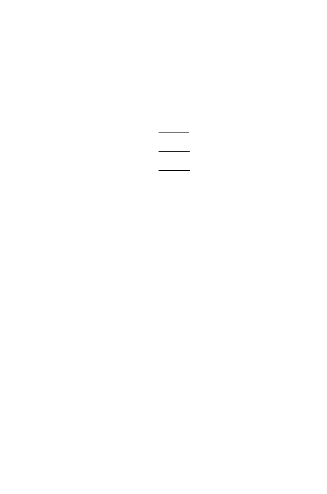

376
13 Genetic Variation in Populations
Since the variances
σ
2
i
are always positive, the heterozygosity for a pooled
population is always larger than the average of the heterozygosities of the
subpopulations of which it is constituted.
The quantities we have been discussing are closely related to the F-
statistics defined by Wright (1951). These statistics were called fixation in-
dices, and they describe the heterozygosities of structured populations at dif-
ferent levels,
F
ST
=
H
T
−
H
S
H
T
,
F
SR
=
H
R
−
H
S
H
R
,
F
RT
=
H
T
−
H
R
H
T
,
where subscripts
S, R,
and
T
stand for subpopulation, region, and total in the
same sense that we have been using them above. These subscripted quantities
should not be confused with homozygosities,
F
. Note that the terms in (13.5)
are related to the fixation indices.
13.4 Effects of Recombination
The discussion up to now has not included recombination, which permits
alleles on one chromosome to substitute for alleles on other copies of that
chromosome (Section 1.3.2). When describing a population in terms of indi-
vidual loci, it suffices to report allele frequencies corresponding to each locus.
Sometimes we are interested in several different loci that reside on the same
chromosome. The specification of the alleles for loci on the same chromosome
is called the
haplotype
. The distinction between genotype and haplotype is
shown in Fig. 13.2. Without recombination, new haplotypes would be gen-
erated only by new mutations. However, new haplotypes are produced by
recombination because chromosome pairs usually recombine during gamete
formation.
Given a group of individuals affected by a particular genetic disease pheno-
type, how do we identify the gene or set of genes that confer that phenotype?
One way is to identify linkage of the locus associated with the disease with
mapped genetic markers. Such
linkage analysis
may be performed by using
families containing affected individuals. One limitation of such an approach
is that the numbers of individuals in families available for genetic study are
usually rather small, which means that the number of meioses represented
in the pedigree (family tree) is correspondingly small. As we shall see in the
next section, low numbers of meioses mean that there will be a low number
of recombination events, which means that any linkage detected will probably
be to genetic markers that are comparatively far away from the locus causing